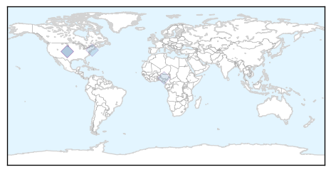

30 Day Trends
Web: 0 alerts, 0 warnings
Twitter: 0 alerts, 3 warnings
Top Articles:
-
No articles found for Mar 16, 2015
Top Tweets:
- 0.861
- RT: Ebola in Guinea: Medical staff trained on infection prevention but no improvement. 3 docs infected past wk at 1 hospit…
- 0.810
- Sierra Leone Ebola Scare Forces Evacuations - U.S. News & World Report http://t.co/IArS9jvWmd ebola EVD
- 0.765
- 10 US charity staff to leave Sierra Leone amid Ebola scare - The Herald-News http://t.co/IaoGFMvBse ebola EVD
- 0.757
- Americans exposed to Ebola patient return from Africa for monitoring - CNN http://t.co/DzMnuatoNY ebola EVD
- 0.748
- Four Americans arrive in Nebraska to be monitored for Ebola virus - Reuters UK http://t.co/IgzpRQX1kt ebola EVD
- 0.689
- Americans exposed to Ebola return from Africa for monitoring - CNN http://t.co/YmwTo7lE8R ebola EVD
- 0.688
- Preparing for Ebola but Stopping Lassa Fever - New York Times http://t.co/FmaZGq49nl ebola EVD
- 0.672
- Explaining and responding to the Ebola epidemic Impact and implications of the Ebola crisis http://t.co/OosVfniITg
- 0.655
- Emergent BioSolutions manufactures possible Ebola vaccine for clinical trials ... - Washington Bus... http://t.co/o0o1oKBqAW ebola EVD
- 0.652
- American Ebola patient worsens to critical condition - USA TODAY http://t.co/Q0GNqU70l0 ebola EVD
- 0.644
- RT: New Ebola outbreak trend shows cases are in a smaller geographic area which holds promise for response efforts http://t…
- 0.619
- Ebola exposed Americans return for monitoring - WPBF West Palm Beach http://t.co/Gd3AI6xA8j ebola EVD
- 0.607
- American Who Contracted Ebola in Africa Now in Critical Condition at Maryland ... - ABC News http://t.co/wdtmbro3nq ebola EVD
- 0.578
- RT: SierraLeone recorded 68 new Ebola infections and 75 deaths last week (8-15 March). These are only LAB-CONFIRMED figures.
- 0.575
- MT [SLTIMES] African Ebola Task Force Launches Food Drive for Ebola Orphans & Children in W/Africa http://t.co/kCfPcFFOgk EBOLANEWS
- 0.555
- Emergent BioSolutions produces new Ebola vaccine teaming with NIH ... - Baltimore Sun http://t.co/sNpJKM5kAP ebola EVD
- 0.541
- Ebola booster vaccine trial to combine GSK Emergent Bio shots - Yahoo News http://t.co/uYfYkKN1DM ebola EVD
- 0.537
- As Ebola Slows Social Life in Liberia Ramps Up - Voice of America http://t.co/jjJK6f2BiH ebola EVD
- 0.502
- Yes we did overreact to Dr. Nancy Snyderman's Ebola screwup - Washington Post (blog) http://t.co/9x38AfIKBA ebola EVD
Web/News Articles

Tweets

Article Locations
Article Confidences